Sheesh.
Essa é fácilmente a melhor celebração do heroes em todos esses anos, os cards são bem mais decentes doq o normal e bem mais interessantes, heroes finalmente heroes entrou pro meta slk
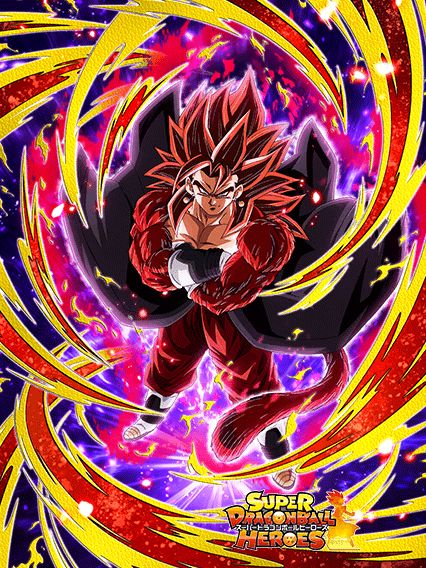
Holy moly.
Se esse card não fosse restrito a crossover e giant ape power, ele seria um top 5 cards do jogo só por ser tão absurdo.
O cara tem uma intro incrível (sem voz de novo, pô global 💀), 60% de redução de dano, 70% de chance de critar e de dar um super adicional, tudo isso com supers de 10 milhões e mais de 600k de DEF na maior tranquilidade.. por 6 turnos pelo menos
Agr, q esse cara é insanamente forte, ele é. O cara é invencível nos 6 primeiros turnos, pode dar até 3 supers de mais de 10 milhões com crítico quase garantido, como vence?
Pra completar ele tem uma active insana que dá muito dano, deixa todos os ataques críticos e ainda faz uma coisa extra
Parte da defesa do vegetto ativa no super, e a active conta como super, tornando ele invencível contra AOEs e supers turno 1 slot 1
No geral, heroes esse ano finalmente se tornou um time usável depois de tanto tempo, obrigado omatsu..? Acho q ele tava de férias e deixou o estagiário fazer os cards.
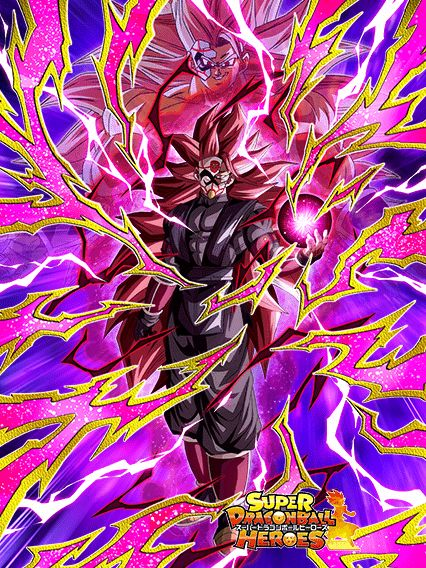
Pq sem big bad bosses?
Esse cara é muito lindo, a arte dele é incrível e meu mano, precisou de uma fusão em blue evolution pra derrotar esse cara e ele simplesmente não é considerado um grande vilão pra eles enfrentarem
Pra começar, ele tem 50% de chance de defesa ativa, da qual eu não vou nem tentar comentar pq ele pelo menos tem defesa ativa garantida se o time inteiro for crossover, então ok.
Bom, a falta de big bad bosses se apresenta rápido, já que o dano dele não é muito alto na base, mas pelo menos ele stacka ATK
Ele infelizmente peca nos adicionais, já que ele tem chance de lançar um adicional só se tiver um goku de inimigo, ou seja, na maioria das vezes vc depende do hidden potential
E falando da transformação, ele tem uma condição demorada, mas decente, já que é só chegar no turno 5
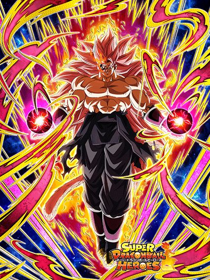
Lendário.
Agr ele tem mais adicionais, mas continua com BBB faltando 💀
Enfim, ele não stacka nada mas o dano dele se torna bem melhor e a defesa no geral boa tmb, e agr ele sempre tem defesa ativa independente do time, oq é bom e ajuda
Ele tmb ganha buffs dependendo da sua vida, oq não é difícil, já que no primeiro turno da transformação ele cura 40% DE VIDA e nos turnos seguintes 15%, oq é bem forte já que o time heroes tende a ter menos vida
Ele tem um adicional meio besta que só ativa se tiver um inimigo ssjblue, e eu prefiro não comentar sobre isso pelo bem do meu mental
No geral, eu gosto desse card e acho ele meio subestimado pela comunidade.
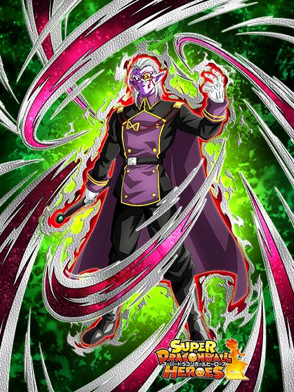
Se ele fosse um suporte pra super tmb..
Esse Fu muito se resume a pegar bastante orbs, e é isso
O fu é um orb changer suporte, mas infelizmente apenas pra extreme, é uma coisa triste mas justa, pq o suporte desse cara é insano
Ele dá 50% de ATK e DEF e 5 de ki, o suporte desse cara é maior que a passiva de um certo card..

Bom, esse rapaz é bom, tem 50% de desvio e defesa decente, então ele é bem usável por ter bastante coisa no kit
Sabe oq mais ele tem? BIG BAD BOSSES RAHHHHHH
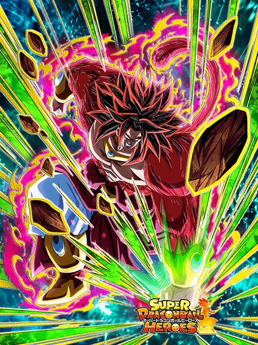
Eu não sabia que era possível ser tão mid.
Eu não quero elaborar a passiva do broly, então eu vou só escrever ela:
Ki +3 and ATK & DEF +200%
Plus an additional ATK & DEF +100% when attacking
É isso, cabou a passiva
COMO ACHARAM QUE ISSO É BOM?? Meu mano tem 300% de ATK e DEF e acabou, boa sorte
Mas calma lá, pq vc não tem só isso, claro, vc pode aumentar ainda mais seu dano e defesa lançando um incrível adicional com 50% de chance de ser super, outro adicional de 50% enfrentando 2 INIMIGOS, e um maravilhoso esplêndido adicional com 70% de super enfrentando um INIMIGO FUSED FIGHTERS
É ele? É o card que vai destruir o zamasu red zone???? oooooomaga
Só avisando que a defesa dele é horrível independente da quantidade de supers, e o dano dele é horrível, chega a ser ridículo pra um card de 2023, até o super 17 é melhor que isso 💀
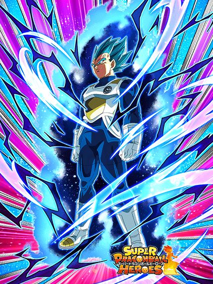
...vegeta shaft #7298736.
Eu não entendo.
Eu realmente não entendo
Esse cara era pra ser até decente mas os stats horríveis dele quebram demais, além da passiva toda estranha
Ele builda dando 3 supers, que legal ein, melhor ainda vendo que o único adicional na passiva dele é travado por número de inimigos, coisa boa
Caso vc esteja contra um inimigo, ele dá mais dano e crítico garantido, só que mesmo buildado ele não consegue ter um dano bom, se ele desse supers de 12 milhões de valor de ataque com crítico garantido, ele podia ser um card q só dá dano mas pelo menos ele faria isso direito
Contra dois ou mais inimigos, ele dá menos dano e perde o crítico garantido, mas tem 50% de chance de dar um adicional e 50% de desvio, q é uma coisa legal
Mas infelizmente é só isso, o vegeta buildado com suporte e etc não consegue dar dano ou tankar, sendo a única opção dele os 50% de desvio q ele tem acesso em umas 3 lutas difíceis do jogo (impressionante)
Uma pena, pq a arte do SSR e do TUR são muito boas e as animações tmb, na real esse cara devia ter pelo menos uma intro, fez falta.
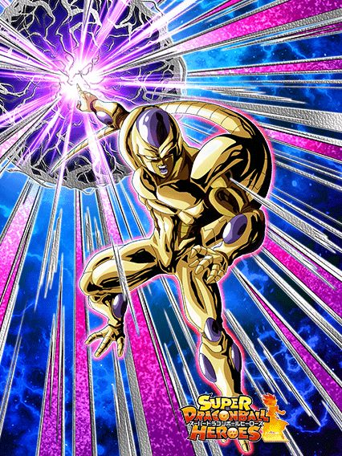
A arte do SSR era melhor.
Eu gostei muito do awaken desse cara, no geral oq ele podia ter melhorado antes ele realmente melhorou e isso deixou ele bem forte
Agora ele tem 60% de redução de dano com o time full crossover, um adicional de 70% de ser super sem nenhuma condição a mais e mantendo um dano até legal nos supers, além da ótima defesa
O grande problema dele é que a maioria da defesa dele vem no super, assim como a maioria dos cards do heroes, então não pense que jogar ele no slot 1 com 60% de redução mas 97k de defesa 💀
Ele tmb manteve o negócio de auto-selar o próprio super caso vc fique abaixo de 20% de HP, mas com cards mais fortes tipo o vegetto, junto com as curas de outros, estar abaixo de 20% é extremamente incomum e vai ser raro acontecer
No geral, é isso, não posso reclamar da falta de big bad bosses nele pelo menos, aqui faz sentido.
")
A arte do SSR era melhor tmb.
Esse rapaz virou uma lenda e é mais insano doq parece
Nos primeiros 5 turnos ele literalmente é comparável com o ferrando Piccolo laranja, já que ele consegue ter mais de um milhão de defesa pré-super com defesa ativa, isso levando só 3 ataques pra buildar defesa, então é, é comparável com o piccolo
Lógico que o piccolo é melhor ainda já que o janemba só pode ser usado em crossover, mas deu pra entender
Ele tmb builda um ATK legal atacando 3 vezes, e com um suportezinho e big bad bosses ativo ele passa fácil de 10 milhões no super
Junta isso com 70% de chance de critar depois de levar 5 ataques e ele completa com um kit muito forte, já que mesmo sem a defesa ativa ele ainda consegue ter uma defesa muito boa, e sendo vilão ele já leva menos dano.

Desvia ou morre capítulo 364374691
Essa towa tem um suporte insano, já que ela dá 40% de ATK e DEF pra todo mundo e tem uma passiva levemente decente com 50% de desvio, mas infelizmente ela não vai tankar os ataque básico de nenhum boss
Pelo menos se ela estiver abaixo de 50% de HP o suporte aumenta pra 100% de ATK e DEF, claro q só pra extreme esse pedaço, mas ainda sim muito forte
Infelizmente é isso, ou ela desvia, ou ela vai morrer e é bom q vc desvie ein
Pelo menos ela tem um suporte similar a kaioshin do tempo mas tem o desvio pra ajudar.
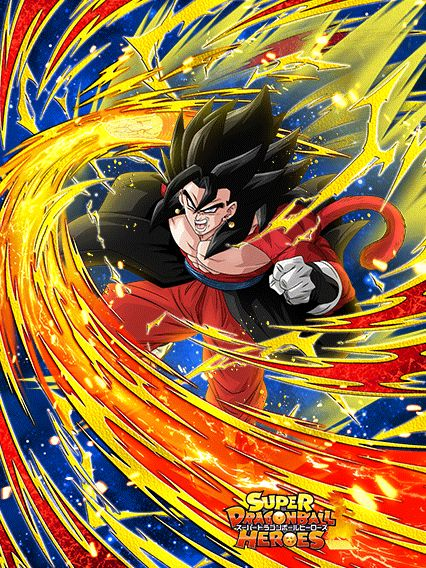
Tutorial de como tornar o vegetto limit breaker o melhor TUR do jogo (modo fácil)
Esse cara é insano de quebrado e o melhor eza da celebração. Eu vejo ele do lado do vegetto limit breaker do mesmo jeito q eu vejo os mamacos junto com o goku ssj4, ele é o slot 2 perfeito e ajuda totalmente o tank absurdo no slot 1
Ele tem uma passiva boa, buffs multiplicativos, 30% de redução de dano com um time full crossover ou full giant ape power e tem 50% de chance de counterar TODOS os supers do jogo, oq é absurdamente quebrado junto com tudo q ele tem
Esse cara ainda é um suporte, dando 30% de ATK e DEF pra giant ape power e dá 30% pra crossover separadamente, ou seja, são 30%s separados mas se o personagem tiver nas 2 categorias, ele ganha os 2 buffs, não sei quem teve essa ideia mas é genial.
Agora a parte mais quebrada: Esse cara compartilha 6/7 links com o vegetto limit breaker, junto com os 60% de ATK e DEF do suporte, que somado as links, o vegetto do lado desse cara ganha 140% de ATK e 80% de DEF, tornando um card quebrado ainda mais quebrado e na minha mais humilde opinião, uma das rotações mais fortes do jogo, já que enquanto o vegetto tanka e dá muito dano, esse cara completa com uma defesa muito competente, suporte e o counter que pode salvar muito
Simplesmente uma lenda.

Duvidaram dele e ele cozinhou muito.
Muito legal ele não ter uma passiva extremamente longa, mas ser um card muito bom, já que tudo q ele faz é buildar 150% de ATK e DEF fazendo 5 supers, e acabou, é só isso
Por sinal ele builda com supers mas consegue lançar 4 em 1 turno, então ele builda fácil
Nesses supers seguidos ele consegue chegar a 1 milhão de DEF e e passar de 10 milhões de ATK
Grande problema dele q tmb é o da maioria dos cards do heroes é que ele leva muito dano antes de dar super, ou seja, nem pense em jogar ele no slot 1 ou em lutas q tenham AOEs (ou builde ele com desvio no hidden potential, mas não conta com isso toda hora).
")
Mid.
Esse cara literalmente tentou copiar o broly ssj4 mas esqueceu dos supers adicionais, resumindo, ele não tem nada de adicional na passiva, oq traduz pra "eu irei dar um dano mediano e morrerei para supers e ataques básicos tmb"
Eu não vejo esse cara sendo útil exceto pelo fato de ele dar 40% de DEF pra aliados extreme, já é alguma coisa, pena q só tem isso.
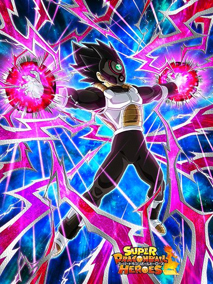
Melhor estar enfrentando um goku ein.
Esse cara tem 280% de ATK e DEF, 50% de chance de dar um adicional e é só esse o kit dele, acabou
A única coisa q ele tem é crítico garantido contra um inimigo goku, e fim de kit
Preciso falar do quanto esse cara é útil, já que todos os bosses do jogo incluem goku no nome né..

THE GOAT, THE GOAT
Literalmente o segundo melhor eza da celebração, e uma lenda completamente
Esse cara tem defesa ativa pra sempre e 100% de DEF a mais só com 1 aliado heroes, ganha 150% de DEF por 5 turnos tomando 1 ataque e builda 150% de ATK e DEF tomando APENAS 3 ATAQUES, e no geral linka bem com saiyajins
E aí tem o mais quebrado, o cara simplesmente cura 10% de HP do dano q ele der
Tem noção de q esse cara dá supers de tipo, 5 a 6 milhões? 10% é muita coisa, mesmo que não pareça
Se esse cara critar, ele vai curar sua barra de vida inteira de graça com 1 super, isso é muito absurdo, esse cara era pra ser um eza secundário..
Tipo, ele é um tank q pode ser muitas vezes jogado no slot 1, já que todo o dano que ele levar ele vai curar de qualquer jeito né
Só tomar cuidado com bosses phy, tirando isso, the goat.

Hey olha só, ele stacka defesa.
Esse cara não é nada mal, tem um ataque bom (infelizmente ele só ganha mais uns 100% se o inimigo tiver debuffado mas ok né) e ele stacka 50% de DEF por super, além de ter 2 de ki e lançar um super adicional garantido se geral do time for do heroes, q adivinha, é o time q ele encaixa
Os links dele podiam ser melhores mas pelo menos ele consegue stackar relativamente rápido se ficar na rotação por um tempo
Vale lembrar q ele só stacka defesa e não tem nenhuma mecânica a mais pra ajudar.. onde foi q eu vi isso esse ano?
")
Uhhh 3 inimigos?
Não? Já pode fazer o L então.
Esse cara tem um kit estranho bizarro, ele tem 300% de ATK e DEF e lança um adicional com 50% de chance de ser super, mas só contra 1 inimigo e é só isso q ele faz
Caso vc esteja contra 3 inimigos ou mais ele por algum motivo vira um deus no jogo, já q a partir de 3 inimigos ele tem 10% de redução de dano por inimigo, mais 150% de ATK e 200% de DEF com 50% de desvio
É desse tipo de mecânica q eu falo, além do desvio ele tem a redução de dano, se ele não desviar ele ainda consegue tankar auto attack, pena q ele é um card heroes com links horríveis, preciso ver se ele linka legal com o babidi LR depois..
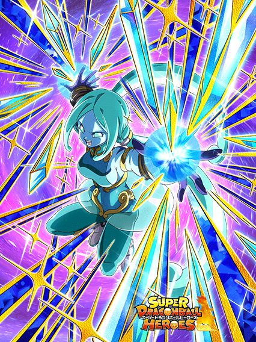
Nada mal pra uma f2p.
Ela é um ótimo card pra battle roads e outros, ela debuffa bem nos supers e tem 50% de desvio com 2 aliados heroes
Ela tem 50% a mais de ATK quando o inimigo tiver abaixo de 80% da vida oq é relativamente fácil e ainda tem um adicional de 70% caso o inimigo caia abaixo de metade da vida
E pra finalizar ela ganha 10% de chance de crítico toda vez q ela ataca um inimigo com qualquer debuff, oq é interessante mesmo q pare em 50%
Eu diria que ela é uma f2p muito decente, tem debuffs, desvio q é ótimo pra ela, crítico e adicional, no geral um card que não necessariamente foca em algo específico pra ser boa mas q consegue ter um diferencial de outros f2ps, belo eza e com certeza uma evolução do card dela antes q era horrível.
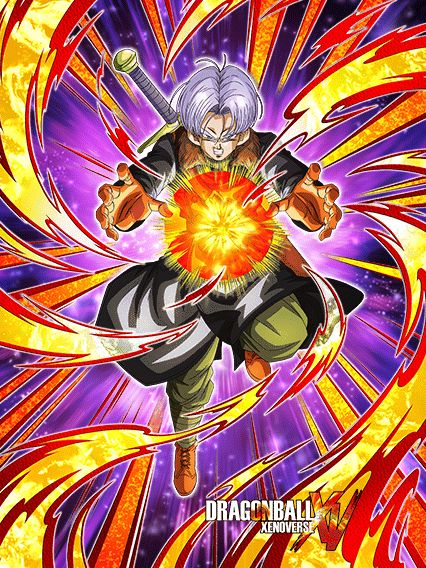
Uuhhh oq é isso?
Eu não entendo a lógica desse card, ele precisa do time e ao mesmo tempo não precisa
Esse trunks tem 4 estados possíveis onde ele pode estar num turno, sendo esses:
100% de ATK e DEF se estiver enfrentando só 1 inimigo e mais 100% de DEF e 50% de crítico se o inimigo for extreme
150% de só DEF se tiver 2 ou mais inimigos (os 100% se for extreme funcionam aq tmb)
Aí ele tem 100% de ATK e DEF e crítico garantido se ele de algum jeito for o único defenders of justice no time, oq contradiz o time inteiro onde ele deveria funcionar
E pra finalizar ele tem 50% de scouter e dá 35% de ATK e DEF pra defenders of justice caso tenha de fato outros defenders of justice no time
Em resumo, condições muito estranhas que se misturam mas nunca tem como ativar todas de uma vez, e além desse cara não dar dano mesmo com crítico ele não tem defesa já que o time dele é todo estranho e ele mesmo não sabe se funciona ou não.
Você chegou ao fim dessa página!
Obrigado por ler tudo, e fica a vontade pra ver outras